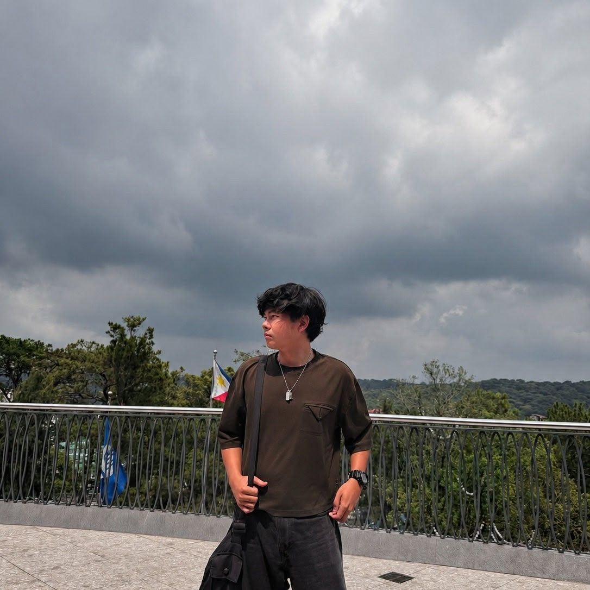

BS Computer Science Student
I am a BS Computer Science student at the University of Northern Philippines. I am interested in computers, technology, programming, and web development. I enjoy learning new skills and applying them through school projects and activities.